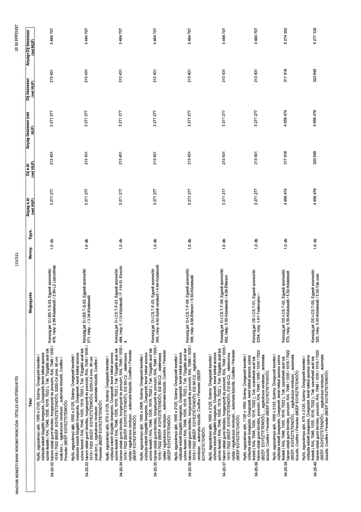

| Tétel | Megjegyzés | Menny. | Egys. | Anyag e.ár (net HUF) | Díj e.ár (net HUF) | Anyag összesen (net HUF) | Díj összesen (net HUF) | Anyag+Díj összesen (net HUF) |
|---|---|---|---|---|---|---|---|---|
| 34-20-32 Nyíló, egyszárnyú ajtó, 1000 x 2125, Szárny: Üvegezett kerettel / víztiszta edzett tűzgátló üvegezés, Üvegezett, keret tokkal azonos színre festett ( RAL 7048, 1035, 1019, 7022 ), Tok: Tűzgátló acél tok három oldali gumi tömítés, horganyzott és porszórt, RAL 7048 / 1035 / 1019 / 7022 (BÉÉP. EGYEZTETENDŐ!), S200-C4 (min. 90 cm szab.bm.), egykulcsos rendszer,, automata küszöb, Coolfire / Peneder (BÉÉP EGYEZTETENDŐ!) | Konszig.jel: D-I.BS.T-S-03, Egyedi azonosító: 478, Hely: 2.89-Közlekedő / 2.90-L2. Lépcsőház | 1,0 | db | 3 271 277 | 213 431 | 3 271 277 | 213 431 | 3 484 707 |
| 34-20-33 Nyíló, egyszárnyú ajtó, 1000 x 2125, Szárny: Üvegezett kerettel / víztiszta edzett tűzgátló üvegezés, Üvegezett, keret tokkal azonos színre festett ( RAL 7048, 1035, 1019, 7022 ), Tok: Tűzgátló acél tok három oldali gumi tömítés, horganyzott és porszórt, RAL 7048 / 1035 / 1019 / 7022 (BÉÉP. EGYEZTETENDŐ!), S200-C4 (min. 90 cm szab.bm.), egykulcsos rendszer,, automata küszöb, Coolfire / Peneder (BÉÉP EGYEZTETENDŐ!) | Konszig.jel: D-I.BS.T-S-03, Egyedi azonosító: 571, Hely: / -3.34-Közlekedő | 1,0 | db | 3 271 277 | 213 431 | 3 271 277 | 213 431 | 3 484 707 |
| 34-20-34 Nyíló, egyszárnyú ajtó, 875 x 2125, Szárny: Üvegezett kerettel / víztiszta edzett tűzgátló üvegezés, Üvegezett, keret tokkal azonos színre festett ( RAL 7048, 1035, 1019, 7022 ), Tok: Tűzgátló acél tok három oldali gumi tömítés, horganyzott és porszórt, RAL 7048 / 1035 / 1019 / 7022 (BÉÉP. EGYEZTETENDŐ!), El2 60-C2,, elektromos nyílás / egykulcsos rendszer,, automata küszöb, Coolfire / Peneder (BÉÉP EGYEZTETENDŐ!) | Konszig.jel: D-I.CS.T-F-01, Egyedi azonosító: 484, Hely: F-113-Közlekedő / F.114-El. Elosztó 4. | 1,0 | db | 3 271 277 | 213 431 | 3 271 277 | 213 431 | 3 484 707 |
| 34-20-35 Nyíló, egyszárnyú ajtó, 1000 x 2400, Szárny: Üvegezett kerettel / víztiszta edzett tűzgátló üvegezés, Üvegezett, keret tokkal azonos színre festett ( RAL 7048, 1035, 1019, 7022 ), Tok: Tűzgátló acél tok három oldali gumi tömítés, horganyzott és porszórt, RAL 7048 / 1035 / 1019 / 7022 (BÉÉP. EGYEZTETENDŐ!), El2 90-C2,, elektromos nyílás / egykulcsos rendszer,, automata küszöb, Coolfire / Peneder (BÉÉP EGYEZTETENDŐ!) | Konszig.jel: D-I.CS.T-F-03, Egyedi azonosító: 355, Hely: 4.92-Szinti rendező / 4.84-Közlekedő | 1,0 | db | 3 271 277 | 213 431 | 3 271 277 | 213 431 | 3 484 707 |
| 34-20-36 Nyíló, egyszárnyú ajtó, 1000 x 2125, Szárny: Üvegezett kerettel / víztiszta edzett tűzgátló üvegezés, Üvegezett, keret tokkal azonos színre festett ( RAL 7048, 1035, 1019, 7022 ), Tok: Tűzgátló acél tok három oldali gumi tömítés, horganyzott és porszórt, RAL 7048 / 1035 / 1019 / 7022 (BÉÉP. EGYEZTETENDŐ!), El2 60-C2,, egykulcsos rendszer,, automata küszöb, Coolfire / Peneder (BÉÉP EGYEZTETENDŐ!) | Konszig.jel: D-I.CS.T-F-04, Egyedi azonosító: 558, Hely: 4.68-Étterm / 5.50-Közlekedő | 1,0 | db | 3 271 277 | 213 431 | 3 271 277 | 213 431 | 3 484 707 |
| 34-20-37 Nyíló, egyszárnyú ajtó, 1000 x 2125, Szárny: Üvegezett kerettel / víztiszta edzett tűzgátló üvegezés, Üvegezett, keret tokkal azonos színre festett ( RAL 7048, 1035, 1019, 7022 ), Tok: Tűzgátló acél tok három oldali gumi tömítés, horganyzott és porszórt, RAL 7048 / 1035 / 1019 / 7022 (BÉÉP. EGYEZTETENDŐ!), El2 60-C2,, elektromos nyílás / egykulcsos rendszer,, automata küszöb, Coolfire / Peneder (BÉÉP EGYEZTETENDŐ!) | Konszig.jel: D-I.CS.T-F-04, Egyedi azonosító: 692, Hely: 3.50-Közlekedő / 4.68-Étterm | 1,0 | db | 3 271 277 | 213 431 | 3 271 277 | 213 431 | 3 484 707 |
| 34-20-38 Nyíló, egyszárnyú ajtó, 1100 x 1950, Szárny: Üvegezett kerettel / víztiszta edzett tűzgátló üvegezés, Üvegezett, keret tokkal azonos színre festett ( RAL 7048, 1035, 1019, 7022 ), Tok: szerelhető acél tok három oldali gumi tömítés, porszórt, RAL 7048 / 1035 / 1019 / 7022 (BÉÉP. EGYEZTETENDŐ!), egykulcsos rendszer,, automata küszöb, Coolfire / Peneder (BÉÉP EGYEZTETENDŐ!) | Konszig.jel: DE-I.CS.T-01, Egyedi azonosító: 2354, Hely: 1.61-Teakonyha / - | 1,0 | db | 3 271 277 | 213 431 | 3 271 277 | 213 431 | 3 484 707 |
| 34-20-39 Nyíló, egyszárnyú ajtó, 1000 x 2125, Szárny: Üvegezett kerettel / víztiszta edzett tűzgátló üvegezés, Üvegezett, keret tokkal azonos színre festett ( RAL 7048, 1035, 1019, 7022 ), Tok: szerelhető acél tok három oldali gumi tömítés, porszórt, RAL 7048 / 1035 / 1019 / 7022 (BÉÉP. EGYEZTETENDŐ!), egykulcsos rendszer,, automata küszöb, Coolfire / Peneder (BÉÉP EGYEZTETENDŐ!) | Konszig.jel: DE-I.CS.T-02, Egyedi azonosító: 573, Hely: 5.50-Közlekedő / 5.52-Közlekedő | 1,0 | db | 4 956 474 | 317 918 | 4 956 474 | 317 918 | 5 274 392 |
| 34-20-40 Nyíló, egyszárnyú ajtó, 875 x 2125, Szárny: Üvegezett kerettel / víztiszta edzett tűzgátló üvegezés, Üvegezett, keret tokkal azonos színre festett ( RAL 7048, 1035, 1019, 7022 ), Tok: szerelhető acél tok három oldali gumi tömítés, porszórt, RAL 7048 / 1035 / 1019 / 7022 (BÉÉP. EGYEZTETENDŐ!), egykulcsos rendszer,, automata küszöb, Coolfire / Peneder (BÉÉP EGYEZTETENDŐ!) | Konszig.jel: DE-I.CS.T-03, Egyedi azonosító: 325, Hely: 5.50-Közlekedő / 5.55-Tak.szer. | 1,0 | db | 4 956 479 | 320 649 | 4 956 479 | 320 649 | 5 277 128 |
